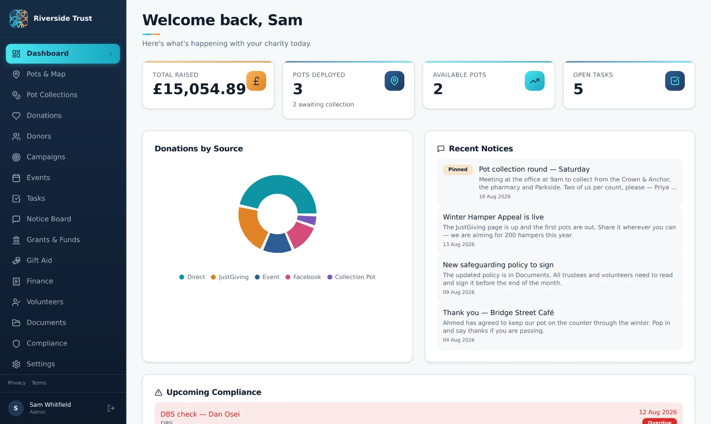
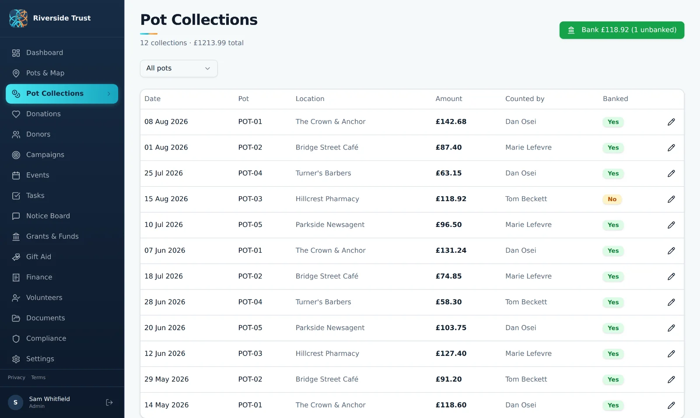
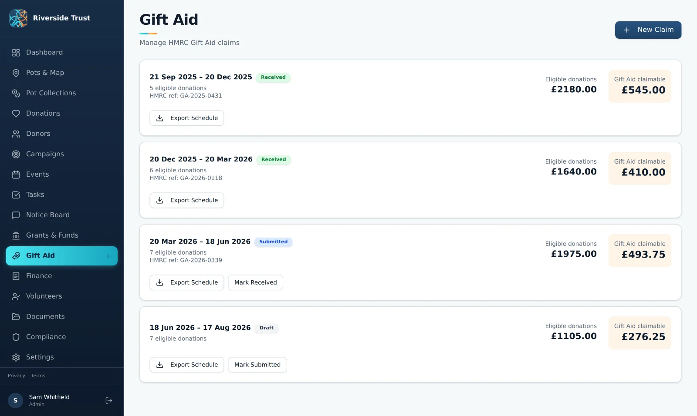
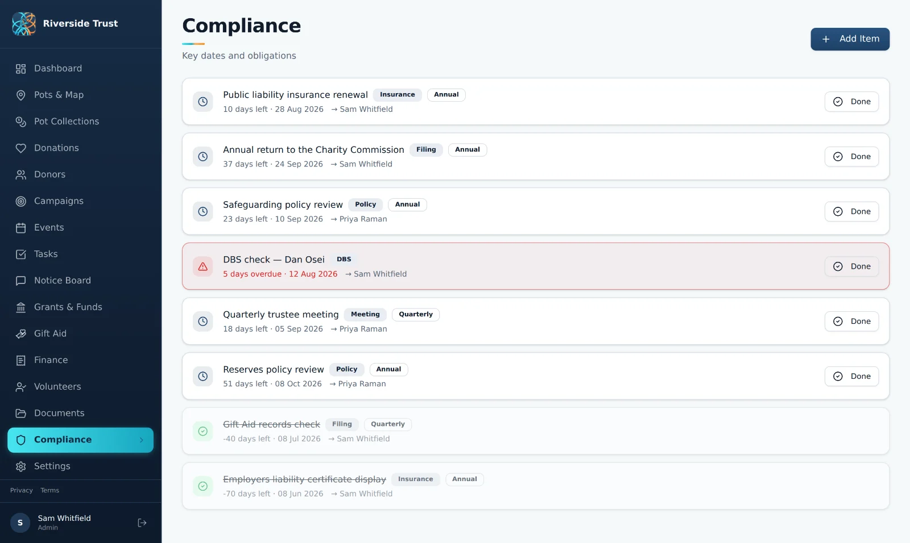
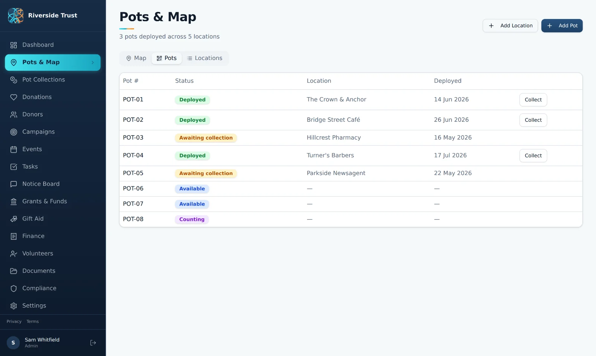

{kind=link}
Monthly
£12per month
Pay month to month after your free trial.
Almoner
Almoner is collection-pot, fundraising and governance software for small charities. It grew out of running a real registered charity's first fundraising campaign — and out of the paperwork that comes with doing it properly. It's live at almoner.app.
14 days freeThen £12/month or £120/year.

The problem
Collection pots go out, cash comes back, and in between sits a paper trail the trustees have to stand behind. Plenty of small charities track pots, counts and banking in notebooks and spreadsheets — honest work, but hard to evidence, and harder still to hand over when a volunteer moves on.
Almoner keeps the whole chain in one place, so the answer to "where did this money come from?" is a record rather than a recollection.
What it does
Two named people on every cash count is the detail auditors tend to ask about, and the one most easily lost in a spreadsheet. Almoner records both, on every collection.
Volunteers, trustees and admins each see a different slice of it: volunteers get the pots, shifts and tasks they need to do the work, while donor records, finances and Gift Aid stay with the people accountable for them.
Simple pricing
Start with full access for 14 days, then continue monthly or save with the annual plan.
Inside Almoner
How the everyday work of collecting, claiming and keeping compliant ends up as a trail trustees can follow. Select any screenshot to view it full size.
Every collection record holds the amount counted, the volunteer who counted it, the one who witnessed it, and the paying-in reference once it clears the bank.

Eligible donations are totted up per claim period with the 25% worked out, tracked from draft through submitted to received against your HMRC reference.

Filings, insurance, DBS checks, policy reviews and trustee meetings, each with someone responsible and a date to meet. Anything overdue is flagged at the top.

Pots tracked by number and status across the venues hosting them — deployed, awaiting collection, counting, or back on the shelf ready to go out.

If you help run a charity and want a hand getting set up — or you'd rather be walked through it before you sign up — email peter@edwardsapps.co.uk and you'll hear back from the person who built it.
Email EdwardsApps{kind=link}
{kind=link}
{kind=link}
{kind=link}